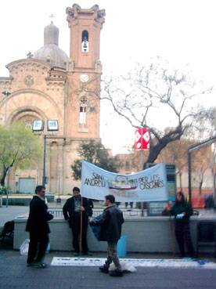
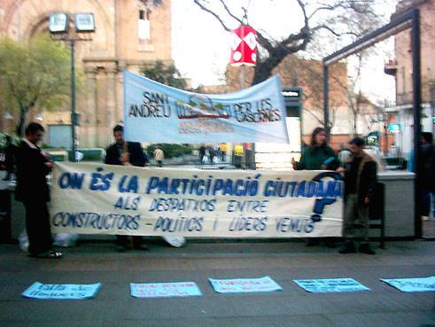
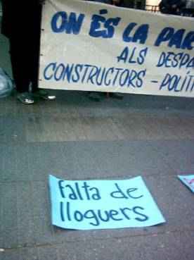
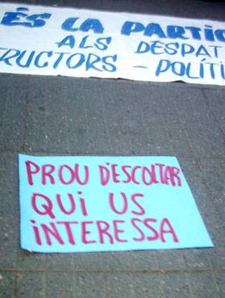
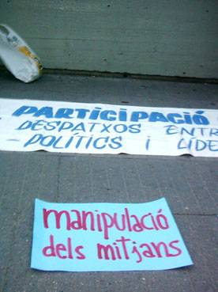
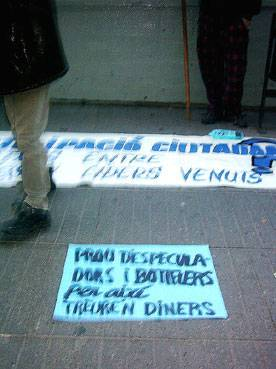

|
als
terrenys PÚBLICS tot PÚBLIC
On és la participació ciutadana? Als despatxos entre constructors, polítics i 'líders' venuts? |
|
|  |  |  |
|  | ||
|  | ||
|  |
|
volem
denunciar els tripijocs, els enganys i les ensarronades que polítics
i aprofitats mantenen pel seu benefici
i en contra dels interesos de molts ciutadans, als que fan entendre que la dissidència respecte qualsevol decisió municipal ha d'interpretar-se sempre com sinònim de marginalitat i com a tal deu ser tractada. |
|
NO ENS ROBAREU LES CASERNES
l'últim terreny públic de Sant Andreu de Palomar